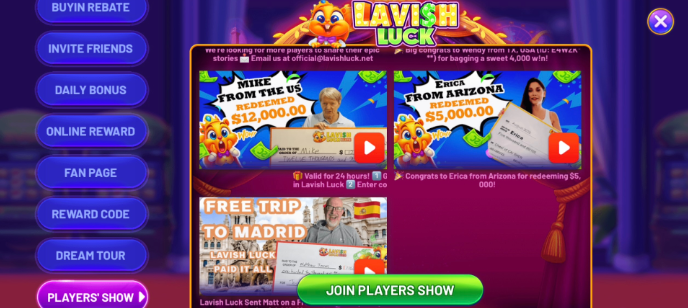
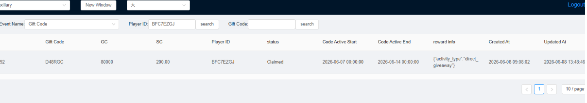
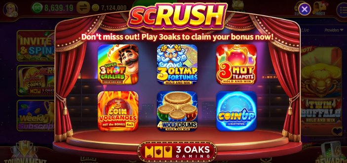

To: All Customer Support Agents
It has been observed that many agents are using a generic transitional reply when transferring tickets or creating tasks:
This template lacks personalization. It makes the player feel ignored and gives the impression of a dismissive attitude, which leads to player frustration.
Effective immediately, all transitional replies must include the specific issue reported by the player. This proves to the player that we have read and understood their problem before escalating it.
Scenario: Player reported that they are unable to purchase, and we verify the reason "too many cards" and need to create a task for payment verification link.
致：所有客服专员
经观察发现，许多专员在转交工单或创建任务时使用了通用过渡回复：
该模板缺乏个性化，会让玩家感到被忽视，给人一种敷衍的态度，导致玩家不满。
即日起，所有过渡回复必须包含玩家报告的具体问题。这向玩家证明我们在升级前已阅读并理解了他们的问题。
场景：玩家报告无法充值，我们核实原因是"卡片过多"，需要创建任务获取支付验证链接。
Please follow this updated timeline and handling procedure for all player inquiries regarding AMOE requests.
Standard Timeframe: AMOE requests are usually completed within 1 month.
General Rule: For standard AMOE inquiries, kindly advise the player to wait patiently.
When a player contacts support inquiring about their AMOE request is not processed above one month.
Exceeded 1 Month (Over 30 Days)
请遵循此更新的时间表和处理程序，处理所有关于AMOE请求的玩家咨询。
标准时间：AMOE请求通常在1个月内完成。
通用规则：对于标准AMOE咨询，请建议玩家耐心等待。
当玩家联系客服询问其AMOE请求超过一个月未处理时。
超过1个月（30天以上）
Please note that IA (Iowa) is being added to our list of non-operational states. Please follow the phase-out timeline below:
| Date | Milestone |
|---|---|
| 2026-06-01 | IA Player will receive prompt about Operating Exit schedule |
| 2026-06-20 | Player unable to purchase, unable to apply AMOE |
| 2026-06-30 | Player unable to log in, purchase or redeem, fully exit |
Verify: Check the backend for an active weekly subscription extending beyond 2026-06-30.
Action: If no remaining weekly reward after June 30: Advise the player to claim the remaining rewards and redeem winnings before 2026-06-30.
*If remaining weekly reward after June 30: escalate a task to Tier 2 for a refund. We are no longer freezing player accounts. Instead, simply submit a task to refund any subscription rewards that will be unattainable after June 30th.
Note: Please update players about the refund amount and status after the task is updated.
Tagging: Add the 6.30 Iowa tag to the related tickets.
Requirement: Always locate the account first using registered email, Player ID.
Verify: Confirm the redeemable SC balance in the backend.
Action: Freeze the game account first. Then, submit a task to Tier 2 to process the refund.
Note: Once the refund is processed, the account must be permanently banned to prevent the user from circumventing state restrictions by logging in from another jurisdiction.
Verify: Confirm the unclaimed weekly subscription in the backend.
Action: Freeze the game account first. Submit a task to Tier 2.
IA（爱荷华州）将被加入非运营州列表。请遵循以下退出时间表：
| 日期 | 里程碑 |
|---|---|
| 2026-06-01 | IA玩家将收到运营退出计划提示 |
| 2026-06-20 | 玩家无法充值，无法申请AMOE |
| 2026-06-30 | 玩家无法登录、充值或提现，完全退出 |
核实：在后台检查是否有活跃周订阅延续至2026-06-30之后。
操作：如果6月30日后没有剩余周奖励：建议玩家在2026-06-30前领取剩余奖励并完成提现。
*如果6月30日后仍有剩余周奖励：向Tier 2升级任务进行退款。我们不再冻结玩家账户，而是直接提交任务退还6月30日后将无法获得的订阅奖励。
注意：任务更新后请向玩家告知退款金额和状态。
标签：在相关工单添加 6.30 Iowa 标签。
要求：始终先使用注册邮箱、玩家ID定位账户。
核实：在后台确认可兑换SC余额。
操作：先冻结游戏账户，然后提交任务至Tier 2处理退款。
注意：退款处理完成后，必须永久封禁该账户，防止用户从其他司法管辖区登录规避州限制。
核实：在后台确认未领取的周订阅。
操作：先冻结游戏账户，提交任务至Tier 2。
The latest Update: The Legends product group has now completed the optimization. The affected products include the Lavish series and the Cider Casino series across all platforms. Cancelled redemptions will no longer count towards the daily limit.
Florida (FL) Daily Redemption Cap (The daily limit reset time is 00:00 (midnight) UTC-8.)
Issue: For Legends series products, if a player cancels a redemption, the amount is still counted towards their daily 5,000 limit.
Temporary Action: Please advise players to minimize cancelling redemptions and provide reassurance. Our team is working to optimize this process.
Note: Acorn series products will not count cancelled redemptions towards the daily limit.
Event Name:
| Item | Details |
|---|---|
| Action | Click the "Join Player's Show" button to send an email to our social media team. |
| Process | Our team will contact the player to arrange sending a prop check for a photoshoot. |
| Reward | 200 SC (Gift code or Transfer to Player directly) |
| Item | Details |
|---|---|
| Action | Click the "Join Player's Show" button to send an email to our social media team. |
| Process | The team will coordinate a complimentary trip within the United States for a travel photoshoot. |
| Reward | The travel and photoshoot experience. |
Players can choose their preferred reward format:
We are able to check this via Backends → Event records → Gift code like the screenshot shown:
Winning Show - Jackpot go

Lavish Game - Players' Show

Backend - Gift Code Records
These events are currently in a testing phase.
Winning Show - Jackpot go
Lavish Game - Players' Show
Backend - Gift Code Records
最新更新：Legends产品组已完成优化。受影响的产品包括全平台的Lavish系列和Cider Casino系列。取消的提现不再计入每日限额。
Florida (FL) 每日提现限额（每日限额重置时间为UTC-8午夜00:00）
问题：对于Legends系列产品，如果玩家取消提现，金额仍会计入每日5000限额。
临时措施：建议玩家尽量减少取消提现，并提供安抚。我们的团队正在优化此流程。
注意：Acorn系列产品不会将取消的提现计入每日限额。
活动名称：
| 项目 | 详情 |
|---|---|
| 操作 | 点击"Join Player's Show"按钮，向社交媒体团队发送邮件。 |
| 流程 | 我们的团队将联系玩家，安排发送道具支票用于拍摄。 |
| 奖励 | 200 SC（礼品码或直接转账给玩家） |
| 项目 | 详情 |
|---|---|
| 操作 | 点击"Join Player's Show"按钮，向社交媒体团队发送邮件。 |
| 流程 | 团队将协调美国境内的免费旅行，用于旅拍。 |
| 奖励 | 旅行和拍摄体验。 |
玩家可以选择首选奖励格式：
我们可以通过Backends → Event records → Gift code进行查询，如截图所示：
这些活动目前处于测试阶段。
| Date | Milestone |
|---|---|
| 2026-04-15 (00:00 PST) | Players will receive prompt about Operating Exit schedule |
| 2026-06-01 (00:00 PST) | Player unable to purchase, unable to apply AMOE |
| 2026-07-01 (00:00 PST) | Player unable to log in, purchase or redeem, fully exit |
We have added three new tags related to the Maine state restriction. Please check and apply them as needed.
IMPORTANT: Please note that we could only refund balance after July 01, and we will advise player redeem before July 01.
| 日期 | 里程碑 |
|---|---|
| 2026-04-15 (00:00 PST) | 玩家将收到运营退出计划提示 |
| 2026-06-01 (00:00 PST) | 玩家无法充值，无法申请AMOE |
| 2026-07-01 (00:00 PST) | 玩家无法登录、充值或提现，完全退出 |
我们已添加三个与缅因州限制相关的新标签。请检查并按需应用。
重要：请注意，我们只能在7月1日后退还余额，并且我们会建议玩家在7月1日前提现。
Previously, we informed that Florida (FL) players requesting redemptions over 5,000 would experience a processing delay. This has now been updated: the daily redemption limit for these state players is 5,000.
For players who have already initiated a single redemption exceeding 5,000, the Legends team will process it as a failed transaction, and the funds will be returned for the player so they can re-initiate the redemption. Please monitor for such cases. The handling method for other product groups is pending.
When replying, you can inform the player about the redemption limit and advise them to submit a new request. Please ensure to provide appropriate reassurance to the player.
此前我们通知，Florida (FL) 玩家申请超过5,000的提现将会遇到处理延迟。现已更新：该州玩家的每日提现限额为5,000。
对于已经发起单次超过5,000提现的玩家，Legends团队将将其处理为失败交易，资金将退回给玩家以便重新发起提现。请监控此类情况。其他产品组的处理方式待定。
回复时，您可以告知玩家提现限额并建议他们提交新请求。请确保向玩家提供适当的安抚。
BGaming slots are currently undergoing temporary maintenance and are unavailable.
Agent Handling Instructions
When responding to player tickets regarding BGaming technical issues or "game failed to load" errors, please use the following messaging:
We are no longer freezing player accounts. Instead, simply submit a task to refund any subscription rewards that will be unattainable after June 15th.
BGaming老虎机目前正在进行临时维护，暂不可用。
专员处理说明
回复玩家关于BGaming技术问题或"游戏加载失败"错误的工单时，请使用以下话术：
我们不再冻结玩家账户。而是直接提交任务，退还6月15日后将无法获得的订阅奖励。
As previously scheduled, Indiana (IN) is being added to our list of non-operational states. Please follow the phase-out timeline below:
| Date | Milestone |
|---|---|
| 2026-04-01 | Players receive the "Exit Schedule" prompt. |
| 2026-05-15 (Tomorrow) | Purchases and AMOE applications will be disabled. |
| 2026-06-15 | Full operational exit; players will be unable to log in. |
Verify: Check the backend for an active weekly subscription extending beyond 2026-06-15.
Action:
Note: Please update players about the refund amount and status after the task is updated.
Tagging: Add the 5.15 Indiana tag to the related tickets.
Requirement: Always locate the account first using registered email, Player ID.
Verify: Confirm the redeemable SC balance in the backend.
Action: Freeze the game account first. Then, submit a task to Tier 2 to process the refund.
Note: Once the refund is processed, the account must be permanently banned to prevent the user from circumventing state restrictions by logging in from another jurisdiction.
Verify: Confirm the unclaimed weekly subscription in the backend.
Action: Freeze the game account first. Submit a task to Tier 2.
按计划，Indiana（印第安纳州）将被加入我们的非运营州列表。请遵循以下退出时间表：
| 日期 | 里程碑 |
|---|---|
| 2026-04-01 | 玩家收到"退出计划"提示。 |
| 2026-05-15（明天） | 充值和AMOE申请将被禁用。 |
| 2026-06-15 | 完全运营退出；玩家将无法登录。 |
核实：在后台检查是否有活跃周订阅延续至2026-06-15之后。
操作：
注意：任务更新后请向玩家告知退款金额和状态。
标签：在相关工单添加 5.15 Indiana 标签。
要求：始终先使用注册邮箱、玩家ID定位账户。
核实：在后台确认可兑换SC余额。
操作：先冻结游戏账户，然后提交任务至Tier 2处理退款。
注意：退款处理完成后，必须永久封禁该账户，防止用户从其他司法管辖区登录规避州限制。
核实：在后台确认未领取的周订阅。
操作：先冻结游戏账户，提交任务至Tier 2。
Hello Team,
Please be advised that ACEWIN has scheduled a maintenance window for today, May 13th. During this period, ACEWIN slot services will be intermittent or unavailable.
ACEWIN Slots (Intermittent/Unavailable)
If players inquire about the downtime, please apologize for the inconvenience and redirect them to our other available slot providers.
大家好，
请注意，ACEWIN已安排今日（5月13日）进行维护。在此期间，ACEWIN老虎机服务将间歇性中断或不可用。
ACEWIN老虎机（间歇性/不可用）
如果玩家询问停机问题，请为给您带来的不便道歉，并引导他们使用我们其他可用的老虎机提供商。
Tennessee (TN) will be added to the list of Non-Operation states. A pop-up notification is expected to be added in-game today. Players will receive the prompt. If any players inquire, please assist in providing the explanation.
Tennessee (TN) will have Purchase disabled today at 4 PM (UTC+8), which is 8 am UTC-0 2026/05/12. Redemption will be disabled 10 days later (will confirm again that time).
Please note that you can view all tickets submitted from the same device in the ticket history field. These tickets may not all belong to the same account, so please check carefully. If a player has multiple accounts, all tickets from those accounts will appear here.
Tennessee（田纳西州）将被加入非运营州列表。预计今天将在游戏中添加弹出通知。玩家将收到提示。如果有玩家询问，请协助提供解释。
Tennessee（田纳西州）将于今日下午4点（UTC+8）禁用充值，即UTC-0时间2026/05/12上午8点。提现将在10天后禁用（届时将再次确认）。
请注意，您可以在工单历史字段中查看从同一设备提交的所有工单。这些工单可能并非全部属于同一账户，请仔细检查。如果玩家有多个账户，这些账户的所有工单都会显示在这里。
Before submitting any refund task for Utah players, please first freeze the player's game account.
在为Utah（犹他州）玩家提交任何退款任务之前，请先冻结玩家的游戏账户。
The Sweepstakes Service will be permanently discontinued for all users residing in the state of Utah. It is mandatory for all agents to handle customer inquiries regarding this change strictly in accordance with the approved messaging and procedures provided below.
| Date | Milestone |
|---|---|
| April 29, 2026 | Players in Utah will begin receiving in-app prompts and notifications outlining the upcoming service discontinuation schedule and key deadlines. |
| May 5, 2026 | Service Termination Date – Utah players will no longer be able to log in to their accounts, make new purchases, redeem SweepsCoins (SC), or access any AMOE services. This date marks the official end of all sweepstakes services for Utah residents in compliance with state regulations. |
When assisting customers, select the appropriate script and procedure based on the nature of their inquiry and the timeline (before/after May 5, 2026).
Follow these steps and use the script below when a customer inquires about unused weekly subscriptions:
First Step: Always locate the player's account first. You may ask the customer to provide their registered email address, player ID, and game name to verify their identity and access their account details.
Follow these steps when a customer reports having redeemable SweepsCoins (SC) after May 5, 2026:
Follow these steps and use the standard script for refund inquiries related to unused weekly subscriptions after May 5, 2026:
When submitting a refund task for unused weekly subscriptions, use the following standardized task title to ensure efficient processing:
Please be informed that the handling process for non-KYC multiple accounts has been updated. The revised SOP now includes different handling approaches based on the KYC status of Account 1 and Account 2, to ensure more accurate and compliant processing. The process flow (image) has also been updated accordingly.
Kindly refer to the Multiple Account Handling for full details and updated guidelines.
抽奖服务将永久停止对所有居住在Utah（犹他州）的用户提供服务。所有专员必须严格按照以下批准的话术和程序处理与此变更相关的客户咨询。
| 日期 | 里程碑 |
|---|---|
| 2026年4月29日 | Utah玩家将开始收到应用内提示和通知，概述即将停止服务的计划和时间表。 |
| 2026年5月5日 | 服务终止日期——Utah玩家将无法再登录账户、进行新充值、兑换SweepsCoins（SC）或访问任何AMOE服务。此日期标志着所有抽奖服务对Utah居民正式结束，以符合州法规。 |
协助客户时，根据其咨询性质和时间线（2026年5月5日前/后）选择适当的脚本和程序。
当客户询问未使用周订阅时，请遵循以下步骤并使用以下脚本：
第一步：始终先定位玩家账户。您可以要求客户提供注册邮箱地址、玩家ID和游戏名称，以验证身份并访问其账户详情。
当客户报告在2026年5月5日后仍有可兑换SweepsCoins（SC）时，请遵循以下步骤：
对于2026年5月5日后与未使用周订阅相关的退款咨询，请遵循以下步骤并使用标准脚本：
提交未使用周订阅退款任务时，请使用以下标准化任务标题以确保高效处理：
请注意，非KYC多账户的处理流程已更新。修订后的SOP现在包括基于账户1和账户2的KYC状态的不同处理方式，以确保更准确和合规的处理。流程图也已相应更新。
请参阅多账户处理了解完整详情和更新指南。
Upon selecting the "Royal Card" method in the game, players are redirected to the Royal Roll Card PWA (Progressive Web App) to activate their virtual card.
Card Activation Process in the PWA
Step 1: User Information Confirmation
Players are automatically directed to the KYC Pre-registration interface.
Review: If all details are correct, the player simply clicks "Confirm" to activate Card.
Step 2: Activation Completion
Once the information is verified and confirmed, Card 1 is activated.
The player will receive an automated email confirmation indicating successful activation.
Once the card is active, players can choose the Royal Roll Card to redeem.
Only selected players can see and use the Royal Roll card in the Lavish.
If the player is asking for the redemption flow, please directly tell the player about the redemption flow.
If players have any questions about the Royal Roll card (except for redemption), kindly guide the player to contact the customer service of Royal Roll card.
Player can contact the Royal Roll Card customer service through the support entry in the PWA.
This is a tournament event hosted by the 3 Oaks machine provider itself. All players who play on this machine are eligible to participate.

SC RUSH Event
SC RUSH Event
在游戏中选择"Royal Card"方式后，玩家将被重定向到Royal Roll Card PWA（渐进式Web应用）以激活其虚拟卡。
PWA中的卡片激活流程
第一步：用户信息确认
玩家将自动被引导至KYC预注册界面。
审核：如果所有信息正确，玩家只需点击"确认"即可激活卡片。
第二步：激活完成
信息核实并确认后，卡片1即被激活。
玩家将收到自动邮件确认，表明激活成功。
卡片激活后，玩家可以选择Royal Roll Card进行提现。
只有选定的玩家可以在Lavish中看到和使用Royal Roll Card。
如果玩家询问提现流程，请直接向玩家说明提现流程。
如果玩家对Royal Roll Card有任何问题（提现除外），请引导玩家联系Royal Roll Card客户服务。
玩家可以通过PWA中的支持入口联系Royal Roll Card客户服务。
这是由3 Oaks机台提供商自行主办的锦标赛活动。所有在该机台上游戏的玩家都有资格参加。
SC RUSH 活动
Hi Team,
Please be advised that the game team has scheduled maintenance for the Acewin slot machine today, April 22, 2026. This update is necessary to ensure optimal performance.
Please be prepared to handle inquiries regarding this downtime.
During this time, players will be unable to enter the Acewin game and may experience disconnections with a pop-up message indicating a server error if they are playing the Acewin game machine.
大家好，
请注意，游戏团队已安排今日（2026年4月22日）对Acewin老虎机进行维护。此更新对于确保最佳性能是必要的。
请准备好处理与此停机相关的咨询。
在此期间，玩家将无法进入Acewin游戏，如果正在玩Acewin游戏机，可能会遇到断开连接并弹出服务器错误消息。
| Date | Milestone |
|---|---|
| 2026-04-01 00:00 | All players will no longer be able to log in. |
First of all you need to confirm with player which state he currently lives in if he did not provide in conversation with Bot, you still need to check if player is LA player.
Second you need to confirm player's Account email.
Then you need to follow below SOPs.
Example: Player XP6NBSG2 - Y9FXJ3
Tier 1 Refund Calculation Formula: See Image example
(Expire in XX Days / 7 days) → rounded up × Purchase price per tier
Examples:
If player has unclaimed Weekly subscription days, Use Below Script:
(Prevent player go to other operating states use sc before we issue the refund)
Submit a task to Tier 2. Request Tier 2 to ask the Project Team to:
For Louisiana (LA) players located in Louisiana (LA) requesting a refund:
We may process a full balance refund (Played + Unplayed SC) Balance needs > 0.5sc.
Example Player: T8KWY4A5
Sync to update all, if you check Non operation state file you will find out Handling process refer to 2026-4-1 updates all file notice.
Update: Handling Process for Booming Slot Machine Bug (Acorn Project Team)
Bug Issue: 4-1 Booming slot machine spins do not consume SC, but rewards are issued normally.
For players under the Acorn Project who profited from the 4-1 Booming slot machine bug and submitted redemptions:
When a player inquires about the balance deduction:
Tag: 4-1 Booming (refresh AI help to see)
Sync to Update All & Update Acorn
| 日期 | 里程碑 |
|---|---|
| 2026-04-01 00:00 | 所有玩家将无法再登录。 |
首先，如果玩家未在与机器人的对话中提供，您需要向玩家确认其目前居住的州，您仍需要检查该玩家是否为LA玩家。
其次，您需要确认玩家的账户邮箱。
然后您需要遵循以下SOP。
示例：玩家 XP6NBSG2 - Y9FXJ3
Tier 1退款计算公式：参见图片示例
（剩余XX天 / 7天）→ 向上取整 × 每层级购买价格
示例：
如果玩家有未领取的周订阅天数，请使用以下脚本：
（防止玩家在我们发放退款前前往其他运营州使用SC）
向Tier 2提交任务。要求Tier 2向项目组确认：
对于居住在Louisiana（LA）请求退款的LA玩家：
我们可以处理全额余额退款（已玩+未玩SC），余额需 > 0.5sc。
示例玩家：T8KWY4A5
同步更新所有内容，如果您查看非运营州文件，您会发现处理流程参考了2026-4-1更新所有文件通知。
更新：Booming老虎机Bug处理流程（Acorn项目组）
Bug问题：4-1 Booming老虎机旋转不消耗SC，但奖励正常发放。
对于在Acorn项目下从4-1 Booming老虎机Bug中获利并提交提现的玩家：
当玩家询问余额扣除时：
标签：4-1 Booming（刷新AI帮助查看）
同步更新所有内容并更新Acorn
When a player requests assistance for another account, they must contact us using that account.
Sync to General Information Knowledge Base General Page - Guidance: Handling Requests for Other Accounts section & Multiple Account Handling
当玩家请求协助其他账户时，他们必须使用该账户联系我们。
Please visit https://sites.google.com/creativespaceltd.com/aux/sumsub-applicants to learn If Aux Overview shows "--" or "todo" in KYC status.
Please remember to save this URL in your bookmarks.
When reviewing a player's KYC status in the Overview panel, if the status is displayed as To Do or --, this indicates a potential synchronization failure between the Overview and the backend KYC systems.
In such cases, you must verify the player's true KYC status by:
Status: The current KYC verification state
Level: The current KYC verification tier
Sync to Update All & General Information Knowledge Base KYC page - KYC Status Verification Guidelines
请访问 https://sites.google.com/creativespaceltd.com/aux/sumsub-applicants 了解如果Aux Overview中KYC状态显示"--"或"todo"该如何处理。
请记得将此URL保存在您的书签中。
在Overview面板中审核玩家的KYC状态时，如果状态显示为To Do或--，这表明Overview与后台KYC系统之间可能存在同步失败。
在这种情况下，您必须通过以下方式验证玩家的真实KYC状态：
状态：当前KYC验证状态
层级：当前KYC验证等级
同步更新所有内容并更新至通用信息知识库KYC页面-KYC状态验证指南
| 日期 | 更新内容 |
|---|---|
| 2026-06-24 | 新建通用规则更新汇总页面，整合 2026-03-30 至 2026-06-18 所有通用规则更新，采用折叠面板+中英对照格式 |